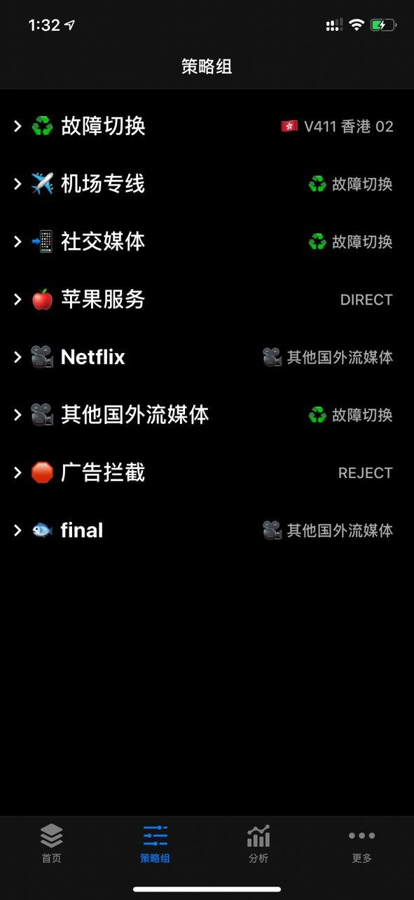
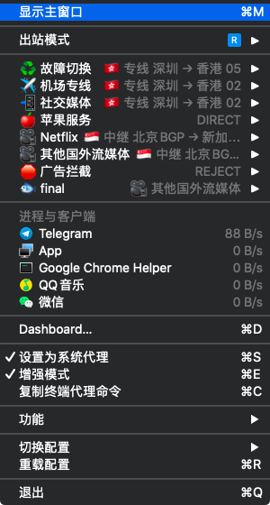
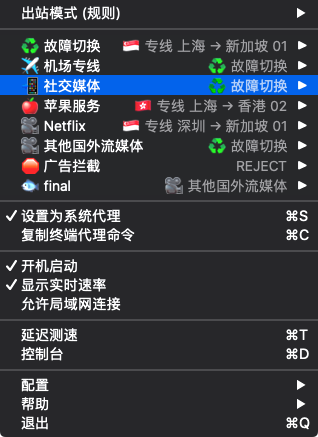
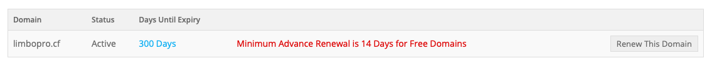
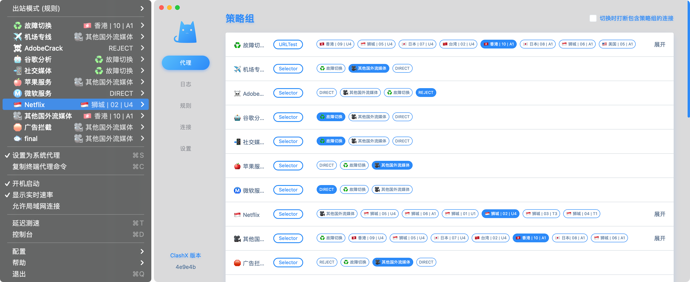
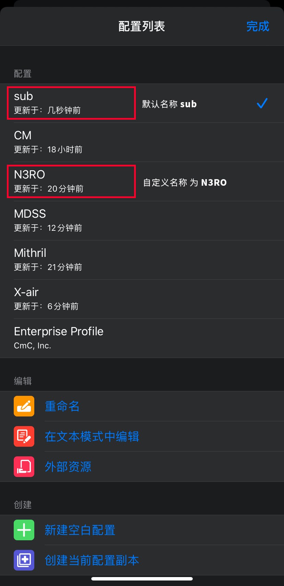
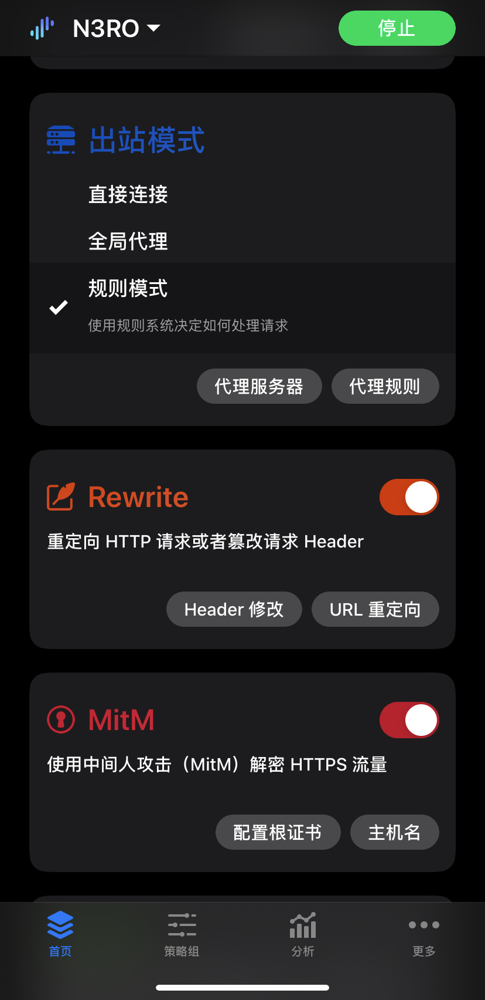
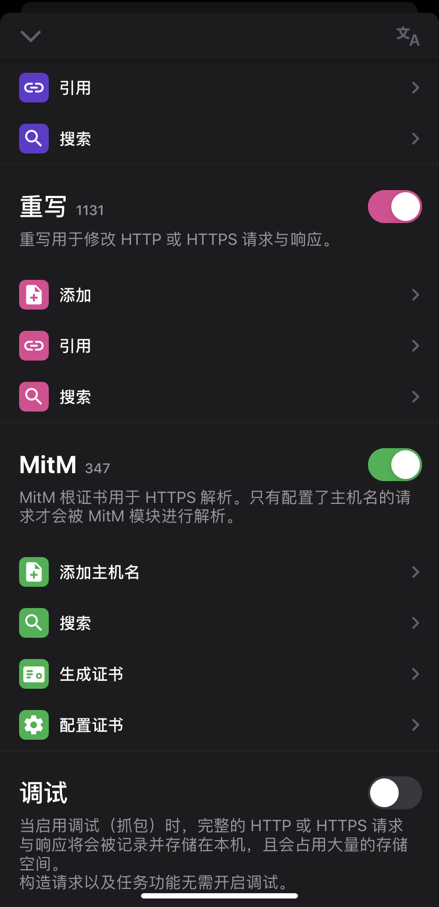
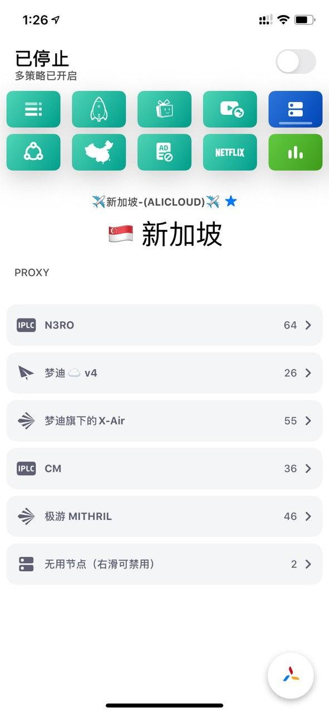
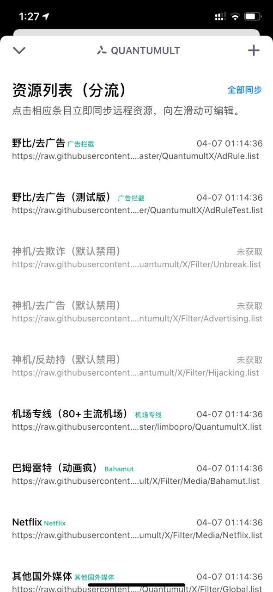

本文隶属于 实用工具/科学上网 分类，点击分类名称可以查看更多相关文章；
I. 背景资料
副标题：基于 -Tindy 的 subconverter 开源项目 - 订阅转换 - （无UI）API及教程，支持多种协议类型（SS/SSR/V2ray订阅转换），集神机规则去广告等各种敲好用的策略组于一身，让你的Clash(X/W/A)，Surge/Quantumult(X)/Loon 无需复杂操作即可焕发光彩。
如需使用 docker 自行部署API请参阅（需要购买VPS）：https://github.com/tindy2013/subconverter/blob/master/README-docker.md
II. 主理人说
2.Quantumult X 用户建议使用文末的毒奶自用预配置文件一键配置；
3.本API的源代码来自 Tindyx 的开源项目：subconverter；
4.我是毒奶，关于订阅转换可能会导致的隐私问题大可放心；



III. 订阅转换API运维日志

IV. 使用的分流规则/策略及脚本说明（必看）

故障切换：该策略组自动检测组内节点可用情况（surge 会切换选中最低延迟节点）；
机场专线：主流机场域名分流规则，例如 N3RO/Nexitally ，你可使其请求走代理，直连等；详情；
社交媒体：国外社交媒体，如Twitter/Facebook/Instagram/Telegram等，流量消耗小，但需要稳定；
苹果服务：苹果服务相关分流规则；
Netflix：鉴于大家喜欢看 Netflix（预先过滤新加坡节点）；
其他国外流媒体：如油管，P站等一切你可以想得到国外流媒体，流量消耗大；
广告拦截：你可以选择让其 Reject 或者 代理 或者别的；
Final：排除以上已知的分流规则的其他未知；
分流规则引用说明
国外媒体规则来自神机（花姐）规则：https://github.com/DivineEngine/Profiles/tree/master
去广告规则来自NobyDa（野比）规则：https://github.com/NobyDa/
机场专线规则来自博主（毒奶）：https://github.com/limbopro/Profiles4limbo
签到脚本引用说明
chavyleung https://github.com/chavyleung/scripts
VSCO/网易蜗牛读书/Termius脚本引用说明
NobyDa https://github.com/NobyDa/Script/tree/master
可关注 QuanX & Surge & Loon 脚本收集（野比）频道： https://t.me/NobyDa
0.请先按本文 后文的 API使用方法 部分教程，配置好转换后的 Surge 订阅，信任并配置证书；
1.打开 趣头条/电信营业厅 APP 进入签到: 右上角 > 签到；
2.系统提示: 获取Cookie: 成功；
3.如果未出现提示，请确定 Surge 通知功能是否开启；
4.打开 [Surge]-点击左上角 [配置列表]-[编辑]-[外部资源]- 往下滑 - [全部更新]；
5.打开 趣头条/电信营业厅 APP 进入签到: 右上角 > 签到；
1.可关注 QuanX & Surge & Loon 脚本收集（野比）频道： https://t.me/NobyDa
API 已经调试OK（almost），默认解锁 Tiktok（v17.2.0 - v8.2.1）**WPS会员、VSCO会员，
1.*如需抓包旧版IPA文件请自行 谷歌 或参考 iMazing 使用教程（备份IPA/恢复及其他抓包旧版IPA）；
2.或下载他人提供的IPA文件：https://t.me/Adblock4limbo/1931 （TikTok 17.8.1）并参考：IPhone免越狱安装任意IPA软件教程 安装他人的IPA文件；
*由于以上 2. 方案博主未实操，仅供参考；
支持转换的订阅类型
支持转换的订阅类型以及相应软件参数；
| 类型 | 作为源类型 | 作为目标类型 | 参数 |
|---|---|---|---|
| Clash | ✓ | ✓ | clash |
| ClashR | ✓ | ✓ | clashr |
| Quantumult (完整配置) | ✓ | ✓ | quan |
| Quantumult X (完整配置) | ✓ | ✓ | quanx |
| Loon | ✓ | ✓ | loon |
| Mellow | ✓ | ✓ | mellow |
| SS (SIP002) | ✓ | ✓ | ss |
| SS (软件订阅) | ✓ | ✓ | sssub |
| SSD | ✓ | ✓ | ssd |
| SSR | ✓ | ✓ | ssr |
| Surfboard | ✓ | ✓ | surfboard |
| Surge 2 | ✓ | ✓ | surge&ver=2 |
| Surge 3 | ✓ | ✓ | surge&ver=3 |
| Surge 4 | ✓ | ✓ | surge&ver=4 |
| Trojan | ✓ | ✓ | trojan |
| V2Ray | ✓ | ✓ | v2ray |
| 类 TG 代理的 HTTP/Socks 链接 | ✓ | × | 仅支持 &url= 调用 |
使用本API前注意
ClashX 用户请升级至最新版本即可食用本API，下载发布页：https://github.com/yichengchen/clashX/releases；
version 1.30.0-1.30.2 参考：https://github.com/yichengchen/clashX/releases
更新 Clash Core 至 v1.0
Proxy, Proxy Gro up and Rule 不在被支持，请更新成proxies, proxy-groups and rules.
rule-provider 更新为 rule-providers .
对于ss节点, obfs, obfs-host 字段被废弃，请使用plugin 和 plugin-opts 替代
FINAL 关键字被废弃，请使用 MATCH 替代
SOURCE-IP-CIDR 关键字被废弃，请使用 SRC-IP-CIDR 替代
以上。
V. 订阅转换API完整使用教程（开始）
第一步 对订阅链接进行Encode
0️⃣如图；
1️⃣复制你的机场订阅链接；
2️⃣打开 https://www.urlencoder.org/ ，粘贴你的机场订阅链接，点击 ENCODE ，得到 URL_ENCODED_LINKS（如上图所示圈起来的部分）；
第二步 套入相应订阅类型
如果你是用 ClashX/W/A 订阅
https://limbopro.cyou/sub?target=clash&url=URL_ENCODED_LINKS #转换为clash订阅ClashR 订阅
https://limbopro.cyou/sub?target=clashr&url=URL_ENCODED_LINKS #转换为clashr订阅surge 通用订阅
https://limbopro.cyou/sub?target=surge&url=URL_ENCODED_LINKS #转换为 surge 通用订阅surge4订阅
https://limbopro.cyou/sub?target=surge&ver=4&url=URL_ENCODED_LINKS #转换为 surge4订阅转换为surfboard订阅
https://limbopro.cyou/sub?target=surfboard&url=URL_ENCODED_LINKS #转换为surfboard订阅转换为v2ray订阅
https://limbopro.cyou/sub?target=v2ray&url=URL_ENCODED_LINKS #转换为v2ray订阅第三步 订阅
复制转换后得到的订阅链接，到相关软件粘贴使用即可；
例如https://limbopro.cyou/sub?target=clash&url=URL_ENCODED_LINKS，Clash的订阅；
例如https://limbopro.cyou/sub?target=surge&url=URL_ENCODED_LINKS，Surge的通用订阅；
例如https://limbopro.cyou/sub?target=surge&ver=4&url=URL_ENCODED_LINKS，Surge4的专属订阅；
以上，订阅完成；ClashX 用户已完成全部操作，Surge 用户或需按下方步骤安装证书；
自定义 Surge 配置的名称（额外小技巧）
https://limbopro.cyou/sub?target=surge&ver=4&filename=N3RO&url=URL_ENCODED_LINKS #转换为surge4专属订阅 并命名配置名称为 N3RO；
https://limbopro.cyou/sub?target=surge&filename=N3RO&url=URL_ENCODED_LINKS #转换为surge通用订阅 并命名配置名称为 N3RO；默认配置名称为 sub，只需添加一个 &filename= 参数即可，=号后面加配置名称，例如&filename=N3RO；

第四步 生成并信任证书
为了使软件得以发挥效益， Surge / Quantumultx / Quantumult 都是需要生成并信任证书的，如大家不懂如何生成并信任证书可以参考：

1.点击，配置根证书，生成新的 CA 证书，生成后，点击安装证书，此时会跳转至Safari，提示此网站...下载一个配置描述文件。您要允许吗？，点击允许，网页提示已下载描述文件；
2.进入 iOS 系统设置-通用-描述文件-已下载的描述文件-选中，并安装，输入密码...完成描述文件安装；
3.进入 iOS 系统设置-通用-关于本机-证书信任设置-针对根证书启用完全信任-选中刚刚安装的并启用即可；
以上，配置并信任证书操作完毕。
4.进入 配置列表 ，选择 你之前的配置，例如本例中的 N3RO。
5.进入 Surge 主界面，找到 [Rewrite] ，开启按钮；找到 [NitM]，开启按钮；找到 [脚本] ，开启按钮；
以上。

1.进入QuantumultX，点击页面右下角三菱按钮，找到MinM模块，点击生成证书，提示生成成功，点击安装证书此时会跳转至Safari，提示此网站...下载一个配置描述文件。您要允许吗？，点击允许，网页提示已下载描述文件；
2.进入 iOS 系统设置-通用-描述文件-已下载的描述文件-选中，并安装，输入密码...完成描述文件安装；
3.进入 iOS 系统设置-通用-关于本机-证书信任设置-针对根证书启用完全信任-选中刚刚安装的并启用即可；
4.开启Rewrite（重写） && MitM 开关
VI. API使用 小技巧
自定义 Surge 配置名称
参数如下：自定义 Surge 配置名称 为 N3RO；
https://limbopro.cyou/sub?target=surge&ver=4&filename=N3RO&url=URL_ENCODED_LINKS #转换为surge4订阅 并命名配置名称为 N3RO；默认配置名称为 sub，只需添加一个 &filename= 参数即可，=号后面加配置名称，例如&filename=N3RO；
VII. 进阶使用参数
参阅：https://github.com/tindy2013/subconverter/blob/master/README-cn.md 调用说明 (进阶) 部分，包含过滤匹配符合关键字的节点，开启节点 TFO/UDP 的支持等；
1.Quantumult X 过滤新加坡节点
https://limbopro.cyou/sub?target=quanx&url=URL_ENCODED_LINKS&list=true&include=新加坡其中新加坡三个字需要进行 URLEncode 处理，最终表述为：
https://limbopro.cyou/sub?target=quanx&url=URL_ENCODED_LINKS&list=true&include=%E6%96%B0%E5%8A%A0%E5%9D%A12.Quantumult X 过滤出新加坡节点，并开启UDP/TFO支持
https://limbopro.cyou/sub?target=quanx&tfo=true&udp=true&url=URL_ENCODED_LINKS&list=true&include=%E6%96%B0%E5%8A%A0%E5%9D%A1
VIII. Quantumult X 一键配置
1.利用 Quantumult X 自带的 [配置文件] - [下载] 功能对 Quantumult X 各个模块即参数进行预配置；
2.利用 NobyDa 贡献的脚本解锁解锁各项事务，VSCO，Termius，网易云阅读，WPS会员等；
3.另外默认配置的是解锁美区App Store下载的 Tiktok；届时自己进 [QuantumultX] - [配置文件] - [编辑] - 找到 Tiktok 修改参数即可；
配置请参阅：https://github.com/limbopro/Profiles4limbo


IX. 问题反馈
问题反馈：请带上截图和问题描述联系 @limboprobot 反馈
X. 附注
版权属于：毒奶
联系我们：https://limbopro.com/6.html
毒奶搜索：https://limbopro.com/search.html
毒奶导航：https://limbopro.com/daohang/index.html本文链接：https://limbopro.com/archives/subconverter.html
本文采用 CC BY-NC-SA 4.0 许可协议，转载或引用本文时请遵守许可协议，注明出处、不得用于商业用途！